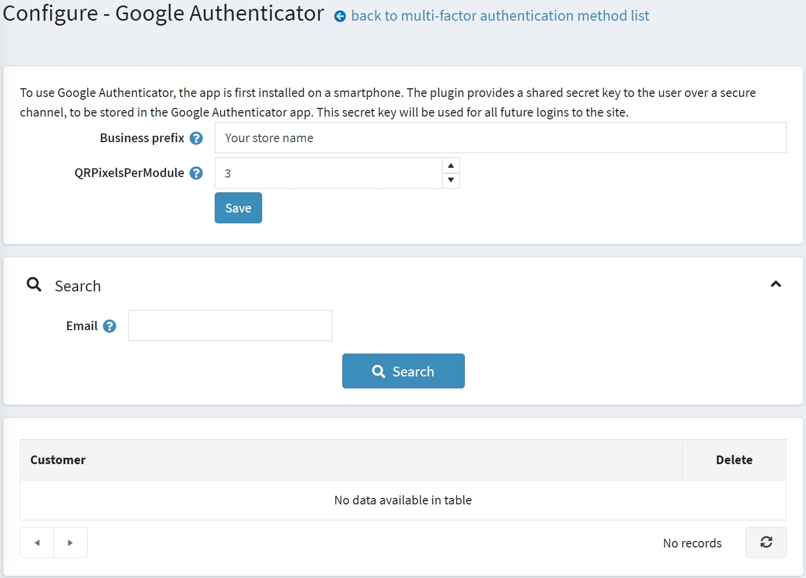
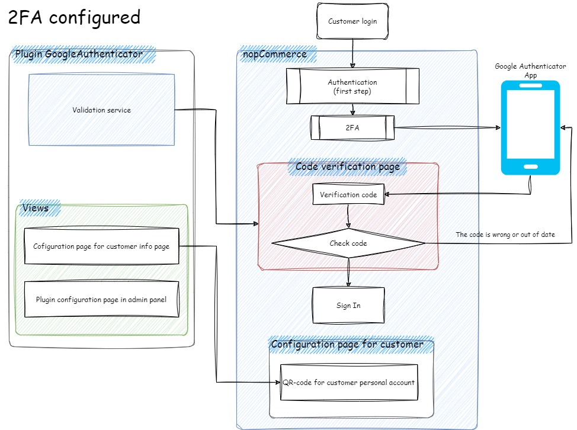
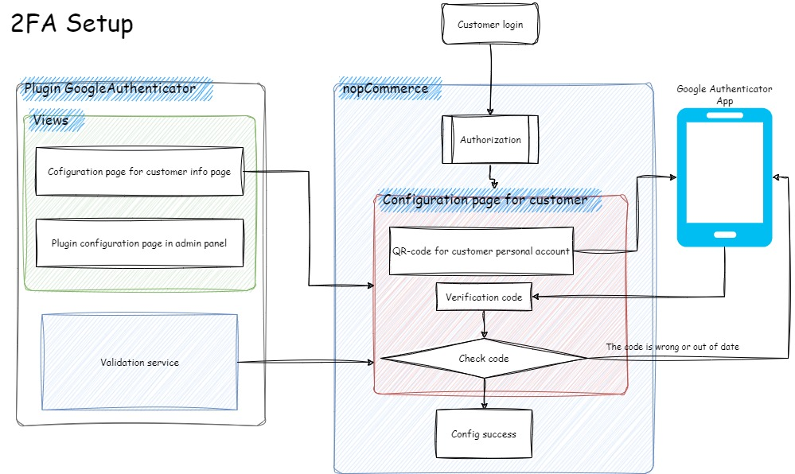
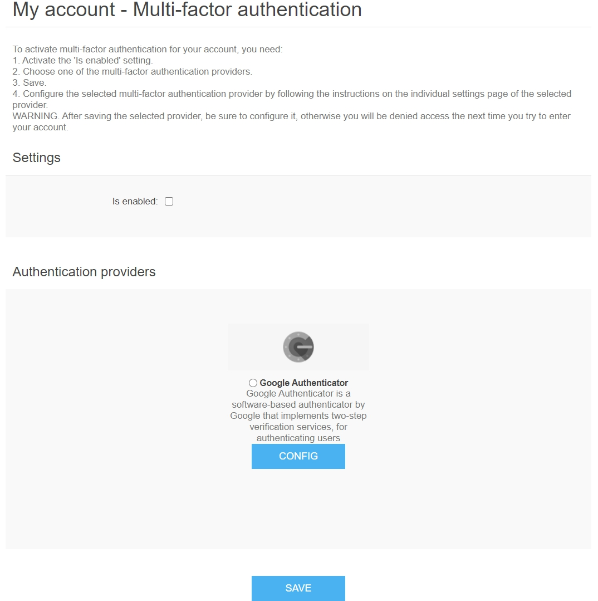

Multifactor authentication
Multifactor Authentication (MFA) (in our case, it is Two-Factor Authentication – 2FA) is an authentication method that requires a user to provide two or more verification factors to gain access to a resource. MFA is a core component of a strong identity and access management (IAM) policy. Rather than just asking for a username and password, MFA requires one or more additional verification factors, which decreases the likelihood of a successful cyberattack.
nopCommerce implements a built-in multifactor authentication through Google Authenticator. You can set up other methods using plugins from the marketplace.
Manage the multifactor authentication methods
By default, the Google Authenticator plugin is not installed. To install the plugin, go to Configuration → Local plugins.
Search for Google Authenticator in the Plugin name field.
Click the Install button.
Then click the Restart application to apply changes button to apply changes.
Go to Configuration → Authentication → Multi-factor authentication. The Multi-factor authentication window will be displayed:

Click Edit beside an authentication method and select Is active to activate the method. You can also define the method's Display order. Then click the Update button to save the changes.
Configuring the Google Authenticator plugin
Click Configure for the method configuration. The Configure - Google Authenticator page will be displayed as follows:

On this page, you have to enter:
- Your Business prefix so that users can differentiate the account information for your store in the GoogleAuthenticator app.
- QRPixelsPerModule to set the number of pixels per unit. The module is one square in the QR code. By default, it is 3 for a 171 × 171 pixel image.
Then click Save.
On this page, you can also search for customers by email using the Search panel.
How it works
To understand how the multifactor authentication works in nopCommerce, see the diagram above.
- The 2FA configured scheme represents the process when 2FA is already configured by a customer. 
- The 2FA setup scheme represents the process when a 2FA setup is needed to be done by a customer. 
Multifactor authentication page in public store
To configure multi-factor authentication, a customer should visit the My account - Multi-factor authentication page, which is displayed as follows:

Steps to activate MFA:
- Activate the Is enabled setting.
- Choose one of the multifactor authentication providers (by default, there is only one).
- Save.
- Configure the selected multifactor authentication provider by following the instructions on the individual settings page of the selected provider.
Warning
After saving the selected provider, make sure to configure it; otherwise, you will be denied access the next time you try to enter your account.